拉法耶尔为了这些工程整天忙碌着，写作只好放到业余时间了。这期间，他在沼泽和罗马之间多次往返，认识了一位罗马大学的教授，这位教授有一本珍贵的丢番图《算法学》手稿，共七卷。这个发现让拉法耶尔惊喜不已。两个人经过切磋和讨论，决定把它翻译出来。
可惜由于工作压力，翻译最终没有完成。不过，丢番图的手稿使拉法耶尔受益匪浅。仔细研读之后，他决定彻底修改自己的手稿，把大量的丢番图的例题引用到自己的书里去。
公元1573年，拉法耶尔《代数学》的前三卷出版。他在第三卷结尾处写道：“处理几何学的第四卷、第五卷目前还没有完成，不过希望很快便可以问世。”
然而，拉法耶尔没能完成这部划时代的著作。前三卷出版后不久，拉法耶尔便与世长辞了，年仅四十六岁。
拉法耶尔的代数是当时最为完整的理论。他在求解的时候，总是先把问题从几何向代数，或者从代数向几何转换，然后用几何与代数两种方法求解，最后验证二者的等价性。这说明，他已经清楚地看到几何与代数的等价性。
不仅如此，他第一次在代数处理中系统考虑正负数，并给出完整的负数运算规则，比如乘法：
正数乘以正数等于正数
负数乘以负数等于正数
正数乘以负数等于负数
他甚至给出了负负得正的几何证明。最重要的是，他发现了虚数（平方根下的负数），并给出虚数的运算规则：
正虚数乘以正虚数等于负数
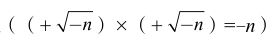
正虚数乘以负虚数等于正数
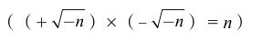
负虚数乘以正虚数等于正数
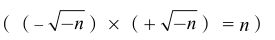
负虚数乘以负虚数等于负数
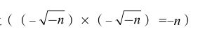
拉法耶尔没有用虚数这个名词。他把正虚数叫作正的负数
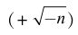
，负虚数叫作负的负数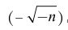
。他还证明，运用卡尔达诺—塔塔利亚公式和自己的虚数，所有三次方程的解都可以正确地得到。在此后长达一百多年的时间里，这位业余数学爱好者的“平方根下的负数”受到专业数学家们一致的嘲笑。就连17世纪的大数学家笛卡尔也没有看到这种“怪数”的意义。“虚数”这个名字就是笛卡尔的贡献，他的本意是说，这种数完全是子虚乌有，没有任何数学意义。直到18世纪，虚数的重要性才被欧拉（Leonhard Euler，公元1707—公元1783）和高斯展示出来。现在虚数用符号i来表示，
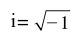
。拉法耶尔找到这个奇怪的虚数，是受到卡尔达诺的启发。
在卡尔达诺处理的三次方程中，有一类令他困惑不解。比如：
x3-7x-6=0 （17b）
根据前面的普遍求解法，令x=u+v，得到：
(u3+v3)+3uv(u+v)-7(u+v)-6=0
解（17b）相当于求解下面这个方程组：
u3+v3=6，和3uv=7。
现在我们令u3=3+z，v3=3-z。这样，u3+v3=6自然是满足的，而从3uv=7我们得到：
u3v3=343/27=9-z2
因此，z2=9-343/27=-100/27，也就是：
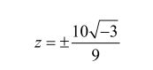
相应地得到：
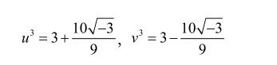
所以（16b）的一个解是：
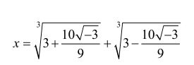
（23）
但（17b）是一个很简单的方程，我们很容易发现，它有三个解，都是实数：x=-1，x=3，x=-2。
对负数开平方有意义吗？为什么简单的方程如（17b），竟然得到如此奇怪的解来？卡尔达诺在出版《大术》之前，曾经专门写信给塔塔利亚：
“我给您寄去一封信，询问一些您没有给我答案的问题的解。其中之一是关于三次方等于未知数加上一个数字（注：那时还没有代数符号系统，卡尔达诺这句话的意思是方程x3=bx+c）。我确信已经掌握了您的规则，可是当未知数系数的三分之一的立方根（注：亦即
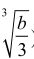
）大于那个数字的一半的平方（注：就是 (c/2)2）时，我没办法用方程来验证结果。”卡尔达诺的困惑我们可以理解：在没有虚数概念的情况下，一些方程式的解简直是可以使人发疯的。塔塔利亚当然也搞不明白，他的回答很符合他的性格：“您根本就没有搞清楚解决这类问题的真正的办法，我可以说您的解全错了！”
其实，利用三次二项式的展开公式，我们可以很容易验证：
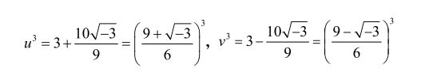
所以对其中的一个解我们可以选择
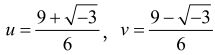
。由此我们得到x=u+v=3，这正是方程（17b）的实数解之一。出版《代数学》的时候，拉法耶尔把自己的姓从马佐里改为蓬贝利，拉法耶尔·蓬贝利（Rafael Bombelli，公元1526—公元1572）横空出世。这位从来没有接受过专业数学训练的水利工程师从此以“虚数之父”的称号名垂千古。
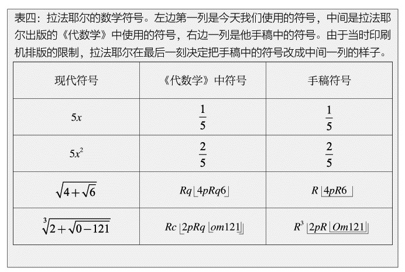
拉法耶尔的另一个重要贡献是数学符号。早在15世纪末期，帕西奥利就开始使用数学符号，不过帕西奥利采用的符号十分有限。卡尔达诺等人关于三次方程的解则完全是语言描述式的。拉法耶尔创造了相当完整的数学符号。表四列出一些拉法耶尔创造的运算符号。由于当时的印刷机能力有限，拉法耶尔在把著作付梓的时候不得不临时改变手稿中的数学符号。不过，把这个三千多年的问题，“求一个数，使它满足这样一个条件：把这个数自乘两次，加上这个数的一次自乘和某个常数的积，加上这个数与另外一个常数的积，再加上第三个常数，使得总和等于零”，变成简洁的一句话：
x3+ax2+bx+c=0 （17）
还需要二三百年时间呢。
亚当和夏娃就像虚数，负1的平方根：对于它的存在，你永远得不到具体的证明，可是你一旦把它包括在方程里面，你就能进行所有的计算，而且你无法想象，没了它你该怎么办。
菲利普·普尔曼（Philip Pullman，现代英国作家）：《黄金罗盘》（The Golden Compass）
（关于负负得正的运算关系）实际上，在语言当中这个关系也非常微妙。有一次，牛津大学著名的语言哲学家约翰·奥斯汀（J.L. Austin，公元1911—公元1960）在讲座里断言，许多语言用两次否定来表达肯定，但没有一种语言用两次肯定表示否定。这时，坐在观众席的哥伦比亚大学哲学家悉尼·摩根拜瑟（Sidney Morgenbesser，公元1921—公元2004）用讥讽的口气说：“就是，就是。”
史蒂文·斯特罗加斯：《x的喜悦》